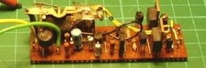
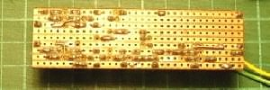

NAVIGATION
TOP of Page
MAIN Page
HOME Page
AC CONVERSION
Specifications
Operation
Circuit Diagram
Circuit Board
|
Specifications for AC Conversion
 Lima 42213 locomotive with added pickup shoe Lima 42213 locomotive with added pickup shoe
Input Voltage:
Output Voltage:
Output Current:
|
4 - 16 volts rms AC
3 - 12 volts DC
1.0 Amp capability
|
TOP
MAIN
HOME
Operation of the AC Conversion Module
The converter takes the 4 to 16 volts AC available at the rails and rectifies it in the EM401 rectifier
bridge to become a single phase AC current of 5.6 to 22.4 volts peak. This current is fed via one of the
Reversing Relay contacts to one of the EM401's in the switch circuit, through the motor and then through
the opposite TIP29 transistor to return to the rectifier bridge.
When the reversing pulse is applied, the 24 volts AC pulse is rectified by the rectifier bridge to become
a 33.6 volt single phase voltage appearing across the output of the rectifier bridge. The 24 volt zener
diode subtracts from this voltage to appear as a 9.6 volt pulse across the 1K5 resistor. This voltage turns
on the BC557 transistor, which drives the two BC547 transistors to turn off both TIP29 transistors, which
then ensures the motor is turned off during the switching pulse. The BD135 transistor is also switched on
during this time to flip the Marklin reversing relay to the opposite contact, and thus drive the motor in
the opposite direction via the alternate EM401 and TIP29 pair.
The circuit works perfectly with the Lima motors, although the locomotive has the same performance as the
original DC unit, and would still not pull the skin off a rice pudding. The circuit should be suitable for
any normal HO motor taking up to 3/4 Amp. The present setup will be fitted to a Hornby tender to convert a
GWR locomotive.
The only other work required is to fit a Marklin pickup shoe under the loco bogies. This was accomplished
on a Lima 44 class using a folded brass insert with plastic sheet glued in as axle insulators. The photos
show the circuit built up on a 72mm by 25mm piece of veroboard. I would now suggest mounting the Marklin
reversing relay separately to the circuit board, as this will enable better fitment in the Lima bodies
TOP
MAIN
HOME
Circuit diagram of the AC Conversion module
Circuit board of the AC Conversion module
|

Circuit Board - top
|

Circuit Board - bottom
|
|
TOP
MAIN
HOME
|